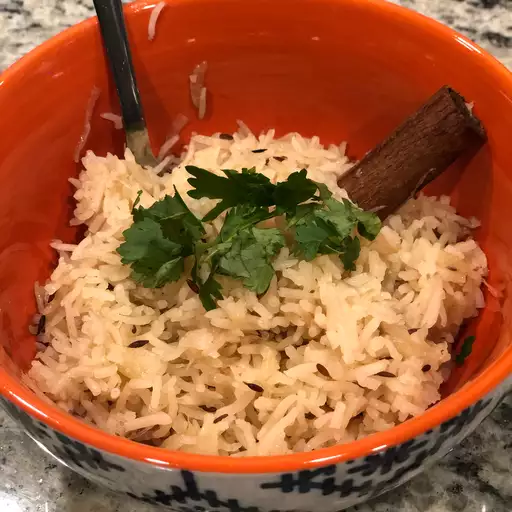

Basmati Rice

This savory Indian rice recipe is flavored with whole spices and fried onions. Soaking the basmati rice before cooking makes all the difference. Serve this Indian-style rice with your favorite Indian curry or dal (lentils). Make sure you warn people not to bite into the whole spices!
Ingredients
- 1 ½ cups basmati rice
- 2 tablespoons vegetable oil
- 1 (2 inch) piece cinnamon stick
- 2 pods green cardamom
- 2 whole cloves
- 1 tablespoon cumin seed
- 1 small onion, thinly sliced
- 2 ½ cups water
- 1 teaspoon salt, or to taste
Steps:
Step 1
Place rice into a bowl with enough water to cover. Set aside to soak for 20 minutes.Step 2
Meanwhile, in the last 10 minutes of soaking, heat oil in a large pot or saucepan over medium heat. Add cinnamon stick, cardamom pods, and cloves, then stir in cumin seed. Cook and stir until fragrant and toasted, about a minute, then add onion to the pot. Saute onion until the color is a rich golden brown, about 10 minutes.
Step 3
Drain water from rice, and stir into the pot. Cook and stir rice until lightly toasted, about 3 minutes. Add water and salt, and bring to a boil. Cover and reduce heat to low.
Step 4
Simmer for about 15 minutes, or until all the water has been absorbed. Let stand for 5 minutes, then fluff with a fork before serving.
